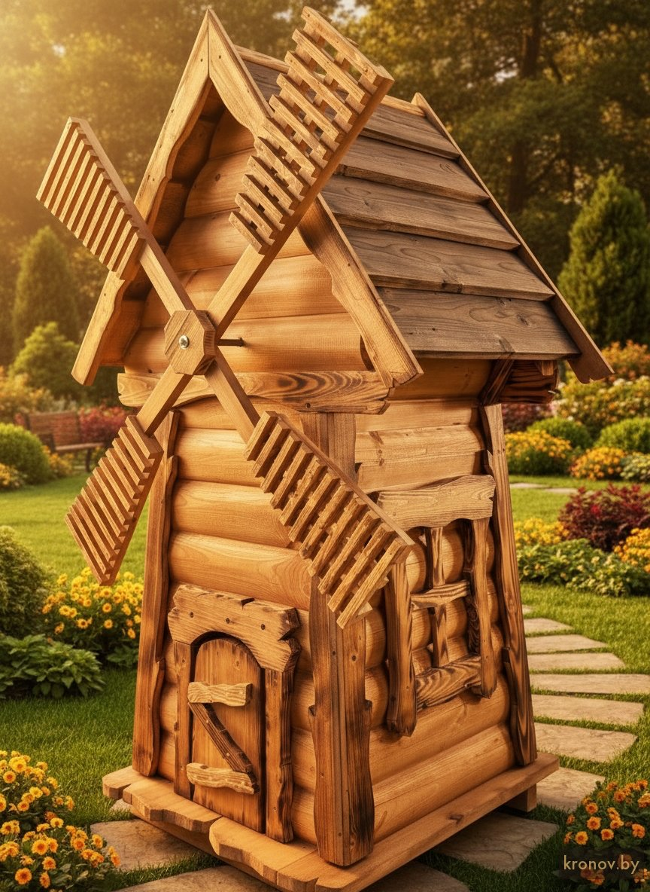

КЛ-001
«Родник»
Крупный колодец с работающей декоративной мельницей. Четырёхлопастное крыло, высокая двускатная крыша из потемнённой доски, брусовой сруб и планочный фриз по периметру. Высота ~2,4 м, рассчитан на точку фокуса участка — у входа, на перекрёстке дорожек или у пруда.